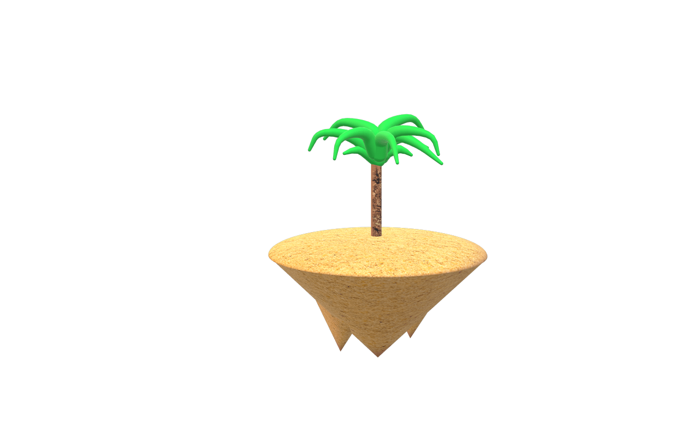
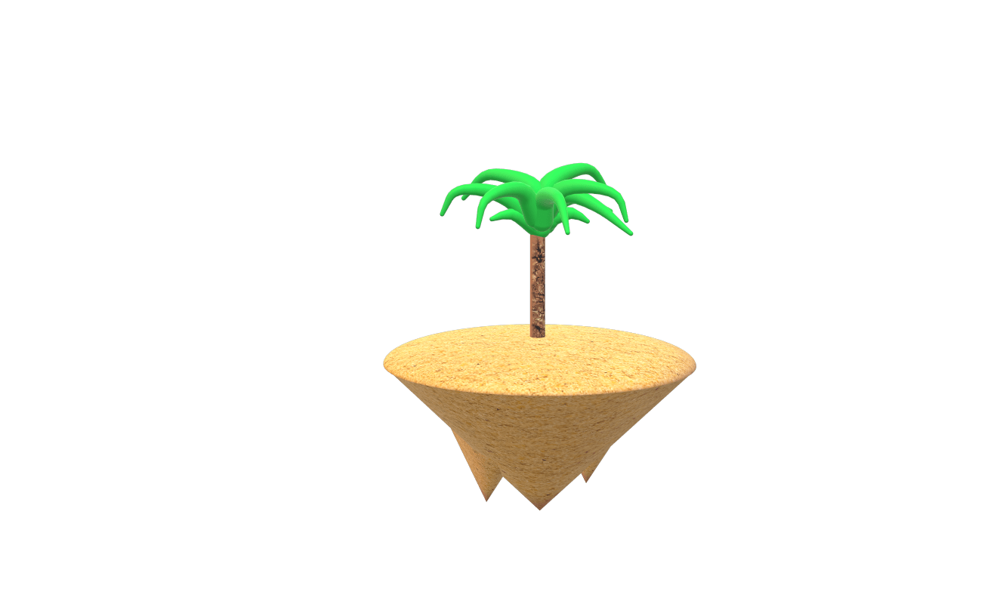

A note from Eric Larson, director of Intermediate Meme Museum:
Everyone wants to tell you or ask you what memes are, what they do. As the director of Intermediate Meme Museum, I have the privilege of diffusing those questions and answers and letting them melt into each other. Memes are fun and not fun, often at the same time. Memes do fun things and not fun things, often at the same time. They’re too articulate and anti-articulate and they’re dismissed and worshipped for this. Stuck in their ways and yet too experimental, they’re and/or and/or and/or.
Instead of getting lost in the muck of the What, IMM is committed to playing in the Everything Else of memes. We do not totalize. And yet IMM is not apolitical. In fact, IMM prioritizes anti-oppressive voices, ideas, and aesthetics that are not featured in the mainstream conception of the mainstream meme conversation. We’re not trying to “promote” our anomalous work to the mainstream, but rather provide a platform for the overlooked to learn from others’ overlooked-ness. To get ready.
We’re Minnesota-based because it’s more fun that way. There are more hidden spaces closer to the ground. We curate mostly through relationships, but always welcome the unconnected. Memes do funky things with place, and so we have chosen not to be located everywhere. All of the folks involved in IMM have tangents that point back to Minnesota.
The first three releases of IMM (because who knows what will happen after that) are curated around certain meme themes and dynamics unique to each release. Due to the tendency of memes and art to outgrow or evade definition only to be sucked back into a vortex of Overarching Theme, the framing that led to my curatorial decisions will be omitted from the IMM website. This way, unexpected resonances between pieces can emerge, and I can avoid committing the meme-killing act of third party deciphering. While we have Museum in our name, we are not here to capture an experience for you. Instead, we’re showing you a number of portals into things going on right now in the memeworld and elsewhere. Please be cautious and enjoy.
IMM1: About the Artists
Martin Gonzales: I’m a Chicano artist who makes work about being Chicano but only inherently, not intentionally. Chicano perhaps only on accident. It doesn’t seem like there is much of a way out of making Chicano art. Sometimes I try and meditate but end up not meditating, but that in fact is meditating… yeah…. I’m a Chicanx artist who makes Chicanx art which actually isn’t Chicanx art but is in fact Chicanx art…. God damn…. I get distracted so easily. What do I want people to know about who I am? I really struggle with this world and what is expected by our values as we get older, I’m broke as fuck, I just moved back into my childhood home, I’m 28, and I think ADHD is real as fuck…. Every time I make something it’s an attempt at trying to make sense of this confusing experience of living and thinking. What else… Oh yeah both my parents are Mexican or I mean, of Mexican heritage. I made this project in Mexico, I don’t know Spanish, I’m Chicanx… but I’m also broke. Just moved into my mom’s in Texas, and really struggle with an ADHD, depression, and anxiety mixture. So if I’m making work about being Chicanx, I’m also making work about all this other shit too…. This project is about making sense of the limiting factors identity has played in my life.
Clee McCracken (@clockluvr on Instagram) is a multidisciplinary artist. All their work is about Clocks.
Gelli Spinelli/@not.yr.boyfriend is a non-binary multidisciplinary artist from Minneapolis, MN. Their meme work can be found on Instagram as @not.yr.boyfriend, and on Facebook as Give Me Cumemes Daddy. They also contribute content to other meme pages, including That Gay Shit, Call Yur Sponsor Sweaty, Genderqueer Gengar, and Antifash Whiscash. For irl tangible art, Gelli makes pins and collars that they sell in their shop trash4posers (trash4posers.etsy.com). They have a rich history of underground queer performance art and event hosting at DIY spaces like Madame of the Arts and Mothership. Last fall, Gelli co-curated a show for Patrick's Cabaret under the moniker Baby Patè. They also run a monthly art group for trans and queer youth, called Ham Time. When Gelli isn’t making memes, they spend their time operating a syringe exchange, putting together sick looks, and mindlessly scrolling to fill the void.
Jordan K. Thomas is a black prose writer whose work has appeared in The Kenyon Review, Kweli Journal, The Toast, The Essay Review, and elsewhere. He was a runner-up for The Pinch's 2018 Literary Awards in Creative Nonfiction, was awarded a Minnesota State Arts Board Artist Initiative grant in 2017, and was a finalist in Indiana Review's 2015 Nonfiction Prize. He holds an MFA in Creative Nonfiction from the University of Minnesota and lives in Minneapolis with his strange, elderly cat.
Intermediate Meme Museum
Eric Larson, Director
Advisory Committee: Paige Carlson, Chris Cloud, Rye Gentleman,
Stacey Vice Web Team: Mith, Trevor Litsey (Feel free to give
yourself different titles) Luke Michaels, Graphic Designer
IMM: About the Team
Eric Larson is a Minnesota-based performance maker and meme curator. In addition to directing IMM, he curated Mn Artists Presents: Eric Larson’s Meme Town at Walker Art Center in October 2017. As a performance maker, he has shown work in Minneapolis, Duluth, Tallahassee, New Orleans, and Seattle. www.ericlarson.club
Rye Gentleman is a PhD Candidate in the University of Minnesota’s Theatre Arts and Dance program, minoring in Communication Studies. His research focuses on the relationship between transgender embodiment and new media. Stacey Vice is a musician living and working in the Twin Cities. They perform under their own name, as well as with the bands Wild Firth and Larry Wish & His Guys Mitch is a media artist working in real time, online and on time! Currently living in Oakland, Mith is pursuing his MFA in Electronic Music and Recording Media. Trevor Litsey is a website-ist based in South Minneapolis. www.trevorlitsey.com Luke Michaels is a graphic designer and musician based in Minneapolis. His design work ranges from personal journals of digital illustrations to branding for your favorite peanut butter. Luke also plays bass and synthesizers in local noise pop group the Florists. Copyright © 2018 Intermediate Meme Museum and commissioned artists. All rights reserved.
Rye Gentleman is a PhD Candidate in the University of Minnesota’s Theatre Arts and Dance program, minoring in Communication Studies. His research focuses on the relationship between transgender embodiment and new media.
Stacey Vice is a musician living and working in the Twin Cities. They perform under their own name, as well as with the bands Wild Firth and Larry Wish & His Guys
Mith is a media artist working in real time, online and on time! Currently living in Oakland, Mith is pursuing his MFA in Electronic Music and Recording Media.
Trevor Litsey is a website-ist based in South Minneapolis. www.trevorlitsey.com
Luke Michaels is a graphic designer and musician based in Minneapolis. His design work ranges from personal journals of digital illustrations to branding for your favorite peanut butter. Luke also plays bass and synthesizers in local noise pop group the Florists.
Copyright © 2018 Intermediate Meme Museum and commissioned artists. All rights reserved.